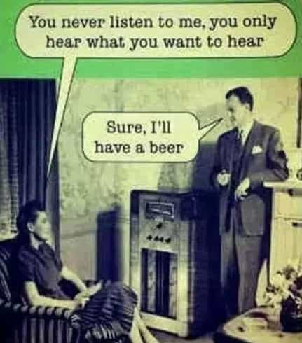

< < < Back
What To Say When A Girl Accuses You Of Wanting Her Just For Sex – Return Of Kings
A fairly common shit test that women employ at the middle stage of seduction deals primarily with the woman’s self-image. Unlike many other shit tests, it is just as frequently encountered by romantic beta men as by aggressive players, appearing seemingly out of thin air as a certain ‘light bulb’ flickers on within the woman’s head. The test usually pops up during escalation, which causes your level of intimacy to advance to the next level. For example:
- when you touch a new area of her body
- when the chemistry between you two deepens
- when either of you mentions something you might do in the future
- when you go in for the kiss
- when you have already kissed her and you’re making out
- when you’re in bed and undressing
- rarely, when you first meet her in a club and try to dance with her
- and very rarely, after sex, when she wants to know the status of your relationship (or lack of)
During any single growth in the intimacy between you that implies that something more is going to happen, a curious phenomenon appears in the woman’s mind: “Wait, what does this look like? Do I appear easy? What will he/observers think about me?” In other words:
A woman never wants to feel like a slut, even if she is currently doing something slutty.
It is at this moment that her defenses engage. She is not a slut, nor does she want to look like one! She is going to put up some resistance, pleasure be damned! That is where the famous phrase appears:
“You just want me for sex.”
aka
“Do you like me just for my body?”
aka
“You just want to sleep with me, don’t you?”
The universal rule of all shit tests is that rational answers are generally not good answers, but it is made even more prominent now. No matter what, do not try to explain yourself, convince her that it’s not really like that, convince her that you value her as a person, or engage in a prolonged discussion. That is exactly the fodder that she needs to reject you and prove that she really is a Nice Girl ™ who cannot be lured into sex by a few sweet words and reassurances. The more you try to convince and soften her, the more she will clam up, and the chance for further escalation is going to fade.

A common misunderstanding
Being the stone-cold player that you are, you’re not going to make the mistake of trying to convince her. Instead, here are a few effective answers (all of which should be delivered with a grin, followed by a brief look into her eyes, and then continuing the escalation as if she hadn’t raised any objections):
Her: “You only want me for sex.”
You: “Why is that bad?”
I call the answer above “pulling a Juan Antonio”, as it was immortalized by the protagonist of the excellent movie Vicky Cristina Barcelona in the scene in which reacts to a similar accusation with a shrug and a simple counter-question: “Why not?” Don’t treat wanting to sleep with her as something that needs to be justified, and she won’t either.
Her: “You only want me for sex.”
You: “And you like that.” *
A classic example of so-called “asshole game”. You need some nerve to run this successfully. There are few men who can nonchalantly launch stuff of this caliber and really mean them, but those who can shall be richly rewarded by women.
Her: “You only want me for sex.”
You: “No, I actually want to steal your organs.”
Agree and amplify at work. Make fun of her with an absurd proposition that goes even further than hers.
Her: “You only want me for sex.”
You: “Do I need a reason?”
Her: “You only want me for sex.”
You: “And because you talk so much.”
Her: “You only want me for sex.”
You: “Just shut up and kiss me.” *
Her: “You only want me for sex.”
You: “No, I like your law degree.”
Her: “You only want me for sex.”
You: “Do you only want me for sex?”
Her: “You only want me for sex.”
You: “I haven’t decided yet.” *
Her: “You only want me for sex.”
You: *grunt**
* = an answer that I have personally used with success
Never allow a woman’s last-minute doubts about her image to stop you. Learn to defuse her reluctance in a playful way and she will reward you with fornication.
Read more: The 5 Most Common Text Messages Girls Send (And How To Respond To Them)


{kind=link}